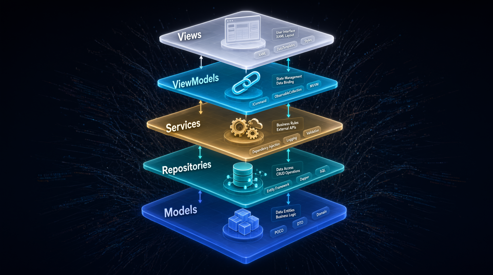
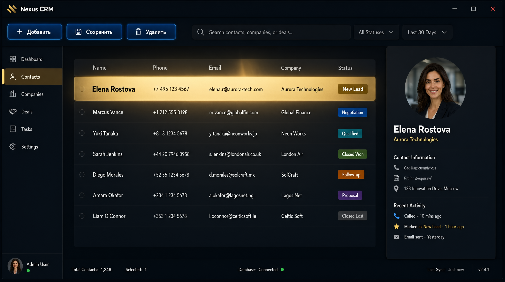
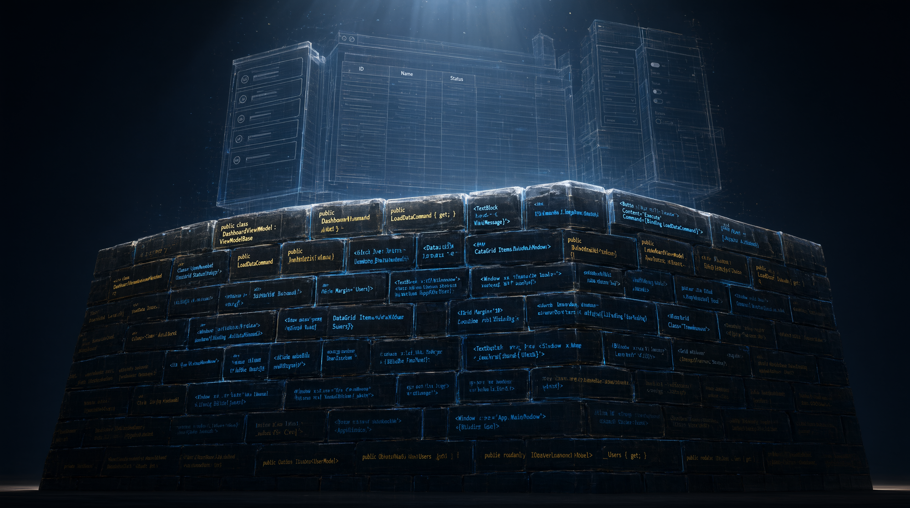

DevCrm 00 - Меня парализовало перед собственным проектом CRM на WPF: ни назад, ни вперёд
Три года я не мог открыть собственную CRM на WPF: боялся не кода, а увидеть, сколько осталось незавершённым. В этой статье — путь от паралича перед брошенным проектом до рабочего прототипа.
Я открыл папку с проектом будущей CRM, и меня накрыло воспоминаниями и тревогой. Что-то подкатило к горлу. Как в детстве, когда перебегаешь дорогу и тут красный: машины полетели в разные стороны, а ты не можешь шагнуть ни назад, ни вперёд.
Если вы годами откладываете проект, потому что «потом, не сейчас», — заходите. Это подземелье про вас. Стены здесь из собственного кода, и я знаю, как из них выйти. Главное, что я вынес: страх не в коде, а во мне.
Я ещё не понял, почему тело кричит. Просто внутри всё сжалось от того, что лежит в этой папке. Проект на C# под .NET, начатый с размахом и брошенный на полпути. В голове уже зашептало: закрой. Сделай вид, что не было. Не сейчас. Потом, потом, только не сейчас.
И меня это взбесило. В который раз я отступаю от того, что сам же и бросил. Собственный код пугает сильнее, чем чужой. Это уже не страх, а стыд пополам со злостью.
Но в этот самый момент до меня дошло: вся эта сцена до боли знакома. Она будто срисована с трека «Война» Дельфина. И в голове вертелись две строчки, которые сложились в главную мысль.
И каждый день превращается в бешеный бой
И это тоже война, но война с самим собой
Дельфин, «Война», © 1997
Я застыл перед экраном. Переменные temp1, asd. Код, сросшийся с интерфейсом. Циклы, у которых нет конца. Это был мой учебный проект, моя гордость когда-то. И самое страшное: я «договорился» с собой не возвращаться сюда. Просто закрыл и сделал вид, что ничего не было. А ведь эту срм я когда-то мечтал довести до ума.
А потом случилось странное. Вместо того чтобы в очередной раз захлопнуть ноутбук, я задержал дыхание и открыл пустой файл, чтобы начать заново. Просто человеку надоело стоять на этой дороге.
И я перестал быть разработчиком, который не знает, куда девать руки. Я представил себя воином, выходящим на сражение. С трясущимися поджилками, не до конца понимая, что происходит, но уже ища, куда поставить шаг.
Едва я потянулся к клавиатуре, понял: строка из песни была точной. Настоящий противник — не тот код, а тот я, что боится сделать первый шаг. Чёрт, а вдруг не выйдет? А может, я зря всё это затеял?
С этим внутренним противником я и пошёл в бой.
Почему я выбирал локальную CRM, а не веб
Три года назад я верил, что серьёзная программа обязана жить в браузере. Все так говорили. Серверы, базы, деплои. Я поднимал всё это, настраивал, тратил вечера. И каждый раз ловил одно и то же ощущение.
Вечер пятницы. Я хочу спокойно посидеть на выходных. А у меня не работает деплой. Или упал сервер. Или CORS ни с того ни с сего решил не пускать. Я не программу писал, а разводил костёр, который надо было поддерживать, чтобы огонь не погас.
Тут я и понял: мне не нужен сайт. Мне нужно приложение, которое делает своё дело без интернета. Открыл и работает. Без пароля к серверу, без хостинга и домена. Так у меня и созрела идея локальной CRM: свои данные, свои обновления.
Для личной или внутренней срм это в разы удобнее, чем таскать данные через облако. В моей CRM данные живут рядом со мной, а их защита — на моей стороне, а не в чьём-то сервере.
Сначала я попробовал WinForms. Быстро, просто, по-своему уютно, без долгих настроек. Но хватило одной лишней формы, чтобы понять: спор WPF против WinForms не пустой. Там быстро собираются окошки, а вот архитектуру десктопного приложения, в которую потом ляжет MVVM, приходится выстраивать на костылях. Для проекта, который я хотел вырастить по-человечески, это был тупик.
И я выбрал разработку десктопного приложения CRM на WPF — надёжном фреймворке от Microsoft для Windows-приложений на .NET. Мне не нужны были микросервисы и слои абстракции, которые существуют, чтобы было о чём поговорить. Мне нужна была кнопка, которая отвечает на F5. Итоговый стек простой: .NET 8, WPF, библиотека Microsoft.Data.Sqlite для доступа к данным, сам файл SQLite лежит рядом с exe.
MVVM в моей CRM, или как я перестал тонуть
Сначала я писал как все. Код прямо в code-behind, в MainWindow.xaml.cs. Работало, пока кода было строчек сто. Я нажимал F5, окно открывалось, всё кликалось. И я решил, что дело сделано.
А потом добавил вторую форму. И третью. И тут всё сломалось.
Я сидел, смотрел на файл в полторы тысячи строк и не мог ответить на простейший вопрос, который в CRM должен быть элементарным: где тут кнопка «Сохранить»? Логика перемешалась с интерфейсом настолько, что разобраться не мог даже я, хотя писал это вчера. Это было распутье: я не понимал, куда идти.
Зацепка пришла неожиданно. Я вспомнил про MVVM. Не как про модный паттерн, а как про способ навести порядок. Любой, кто держит рабочее место чистым, понимает: у каждой вещи есть место. Провода по коробочкам, инструменты по полкам.
MVVM — то же самое, только для кода. Сам паттерн про Model, View и ViewModel. Репозитории и сервисы — слои, которыми я разгрузил вьюмодели от лишних функций. Разложил всё по полочкам, и проект перестал быть кашей, в которой я тонул. Я находил «Сохранить» за две секунды. Страх перед собственным кодом ушёл, потому что у кода появился скелет.
Структура проекта получилась модульной: папки Models, ViewModels, Views, Services и Data. Каждая отвечает за своё и не лезет в чужие.
Ключевая деталь, которая делает это живым, а не картинкой: вьюмодели реализуют INotifyPropertyChanged. Этот интерфейс через служебный API говорит средству привязки, что данные изменились. Без него binding в WPF не узнаёт об обновлениях, и экран остаётся статичным. И вот эта, на первый взгляд скучная штука, отделяет живое приложение от картинки.

Первая модель в CRM, или с чего начать
Когда скелет был готов, я замер по другой причине. Страх подкатил: я стоял перед пустой папкой Models и не понимал, с чего начать. Что писать первым? Если ошибусь, опять утону в хаосе, и все усилия насмарку.
Хорошо, что ответ пришёл из самой сути дела. В срм системе всё крутится вокруг одного. Это контакт. Не юзеры, не задачи, не отчёты. А именно он. Тот, кто что-то купил, кому-то позвонил, что-то обещал. Если правильно описать модель Client, остальное приложится само.
Я не стал выдумывать десятки полей и фич на будущее. Взял ровно то, что нужно менеджеру в работе: имя, телефон, почта, компания, статус, кто из команды ведёт. Потому что лишнее потом добавить проще, чем убирать, когда проект уже держится на схеме базы.
Я открыл пустой файл и начал писать. Не думая об архитектуре, просто фиксируя то, что знаю про контакт прямо сейчас.
public class Client
{
public int Id { get; set; }
public string Name { get; set; }
public string Phone { get; set; }
public string Email { get; set; }
public string Company { get; set; }
public string Status { get; set; }
}
И я впервые за долгое время выдохнул. Фундамент можно положить без абстракций, которые ломаются в самый неподходящий момент.
Потом добавились и остальные сущности. Каждая появлялась по необходимости. Нужно привязать контакт к менеджеру — появился AssignedUserId. Нужны заметки — появилась модель Note. Так код рос из жизни, а не из схемы. И это, пожалуй, самый правильный способ не утонуть.
SQLite для моей CRM, или как я чуть не похоронил всё
Был момент, когда я едва не уничтожил проект на старте. Я начитался про PostgreSQL, развернул её на машине, настроил. Гордый, сел открывать программу и упёрся в стену.
Сервер надо было поднимать до того, как запустится приложение. А то и вовсе заводить его отдельно. И меня захватил привычный ступор. Я хочу открыть свою срм и работать, а вместо этого мне предлагают развести костёр, который надо кормить. Тот же деплой, только на своём диске.
Захлопнул ноут и замер. Дальше только два пути: либо я учусь обслуживать сервер всю жизнь, либо нахожу способ, где база живёт рядом с кодом и просыпается сама.
Тут и всплыл SQLite. Встроенная база в одном файле рядом с приложением. Связка SQLite и C# заработала сразу, без конфига. Ничего ставить, ничего админить. Файл, который всегда с тобой. Я завёл его, и тяжесть ушла.
Для офлайн-работы такого десктопного приложения на одном компьютере этого хватает с головой. А если когда-нибудь понадобится сервер, переберусь на Entity Framework Core: он сменит провайдер, переиспользует ту же модель, а данные переедут отдельным шагом с бэкапом.
Интерфейс моей CRM, или момент, ради которого всё затевалось
База заработала. Я дошёл до самого приятного, до интерфейса. Взял стандартный DataGrid, настроил привязку данных, добавил три кнопки: «Добавить», «Сохранить», «Удалить». Всё через команды: кнопка ничего не знает о логике, она вызывает команду вьюмодели.
Секрет, без которого ничего не зашевелится: коллекция во вьюмодели — это ObservableCollection<Client>. Только она умеет говорить таблице, что добавились новые строки. С тех пор «привязка данных» и «команды» для меня перестали быть просто словами из туториала.
И тут дрожь. Момент, которого я боялся три года.
Я запускаю приложение. Нажимаю «Добавить». Вписываю данные клиента. Нажимаю «Сохранить». В таблице появляется строка.

Не на сайте. Не в облаке. В моей программе, в моём окне, на моём компьютере.
Я не слышал щелчка. Но внутри что-то выдохнуло. Ком, который стоял в горле три года, исчез. СРМ-система, которую я боялся начать, ожила за один вечер. И я понял, что сражение с самим собой, начатое на той дороге, я, кажется, выиграл.
И я понял, почему так долго не возвращался. Я боялся не кода. Я боялся, что не смогу. А оказалось — смог. И этот вечер я теперь вспоминаю каждый раз, когда что-то идёт не так. Он напоминает: противник, которого я победил, был не снаружи.
Обо что я спотыкался по пути в CRM
Не буду приукрашивать: гладко не было от слова совсем. Были баги и вещи, которые выжимали сил не меньше, чем тот вечер с дорогой. Вот три из них.
Первое. MVVM на старте кажется лишней бюрократией. Когда у тебя три окна, хочется плюнуть и закидать всё в code-behind. Я сдержался, и когда проект вырос, каждый день благодарил себя за порядок.
Второе. DataGrid тупит на больших данных. На паре тысяч контактов прокрутка начала дёргаться: строки виртуализируются и так, но контейнеры пересоздаются при каждом проходе, и я почувствовал, как поднимается привычная тревога. Лечится строкой в XAML: VirtualizingPanel.VirtualizationMode="Recycling". Контейнеры переиспользуются, и таблица успокаивается.
Третье. Связка WPF, MVVM и SQLite не про многопользовательскую CRM. Для одного человека это идеально, а для сети рабочих мест придётся мигрировать на PostgreSQL и разводить админа. Я отложил это в голову заранее, чтобы не споткнуться, когда дойдёт до дела.
Итог: как я собрал свою CRM
За несколько вечеров я собрал рабочий прототип своей CRM. Не релиз в продакшн, а фундамент, с которого проект CRM и начинается. Но главное не в этом.
Теперь, когда я открываю код, меня не грызёт. Я больше не стою на месте, гадая, куда шагнуть. Я иду по намеченной дороге, и у меня есть план. Это признак того, что CRM стала моей. Это, пожалуй, единственный показатель, который имеет значение.
Остался нюанс, который не выкинуть: у каждого боя есть цена. И окончательной победы над самим собой, наверное, не бывает. Воин просто становится лучше воевать. А стены этого подземелья из собственного кода я уже выучил наизусть.

Частые вопросы
Сколько времени заняла разработка прототипа?
Около двух недель вечеров по два-три часа. Без спешки, с переписыванием. На этапе прототипа это нормально: главное довести CRM до рабочего состояния, а не сделать идеально с первого раза.
Нужен ли опыт в C# для повторения?
Базовый, да. Понимание классов, свойств, интерфейсов. Если вы когда-нибудь писали на C# хотя бы учебные задачки, этого хватит. По ходу есть возможность освоить MVVM, главное не пытаться объять всё сразу.
Можно ли использовать этот код в коммерческом проекте?
Подход и код разберём по шагам в следующих статьях, ограничений на использование нет. Как прототип он рабочий, но для продакшена вашей CRM нужно будет допилить валидацию, пройти тестирование и продумать перенос данных на более серьёзную базу.
А можно сделать свою срм с нуля без опыта?
Можно, если готовы учиться по ходу. Без багажа будет сложно, но оно того стоит. Начните с простой модели Client и одной кнопки «Добавить». Остальное придёт постепенно. Неважно, как звать такую систему — срм, црм или CRM, суть одна: это ваш инструмент. WPF и MVVM здесь не прихоть, а способ не погибнуть в собственном коде.
Радость длилась недолго. Стоило мне завести второго клиента, как я заметил странность. Кнопка «Сохранить» молчала, если я забывал заполнить телефон. Никаких ошибок, никакого крика, просто тишина. В моей аккуратной архитектуре осталась дыра, через которую проваливаются данные. Как я заставил программу говорить со мной — в следующей статье цикла.